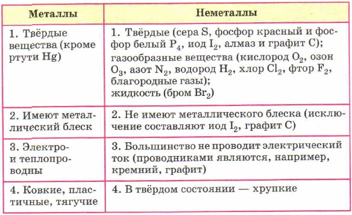

Неметаллы — это химические элементы, которые образуют в свободном
виде простые вещества, не обладающие физическими свойствами металлов.
Из 114 химических элементов 92 относятся к металлам, 22 являются неметаллами.
Неметаллы — простые вещества, при обычных условиях могут быть газами, жидкостями и
твёрдыми веществами
Способность атомов одного химического элемента образовывать несколько простых
веществ называют аллотропией, а эти простые вещества — аллотропными видоизменениями
или модификациями.
Из простых веществ — неметаллов при обычных условиях жидкостью является только бром,
молекулы которого двухатомны. Формула брома Вr2. Это тяжёлая бурая, с неприятным запахом жидкость
